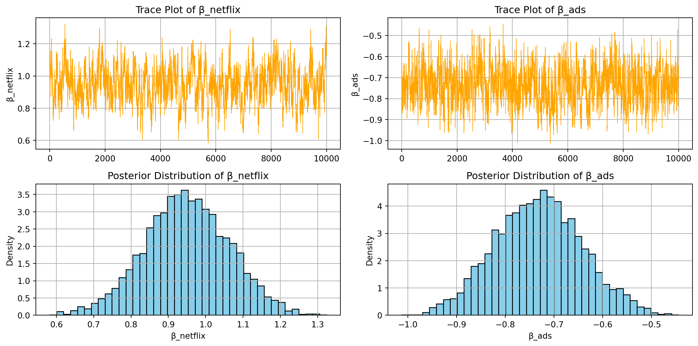

import pandas as pd
df = pd.read_csv("conjoint_data.csv")Multinomial Logit Model
This assignment expores two methods for estimating the MNL model: (1) via Maximum Likelihood, and (2) via a Bayesian approach using a Metropolis-Hastings MCMC algorithm.
1. Likelihood for the Multi-nomial Logit (MNL) Model
Suppose we have \(i=1,\ldots,n\) consumers who each select exactly one product \(j\) from a set of \(J\) products. The outcome variable is the identity of the product chosen \(y_i \in \{1, \ldots, J\}\) or equivalently a vector of \(J-1\) zeros and \(1\) one, where the \(1\) indicates the selected product. For example, if the third product was chosen out of 3 products, then either \(y=3\) or \(y=(0,0,1)\) depending on how we want to represent it. Suppose also that we have a vector of data on each product \(x_j\) (eg, brand, price, etc.).
We model the consumer’s decision as the selection of the product that provides the most utility, and we’ll specify the utility function as a linear function of the product characteristics:
\[ U_{ij} = x_j'\beta + \epsilon_{ij} \]
where \(\epsilon_{ij}\) is an i.i.d. extreme value error term.
The choice of the i.i.d. extreme value error term leads to a closed-form expression for the probability that consumer \(i\) chooses product \(j\):
\[ \mathbb{P}_i(j) = \frac{e^{x_j'\beta}}{\sum_{k=1}^Je^{x_k'\beta}} \]
For example, if there are 3 products, the probability that consumer \(i\) chooses product 3 is:
\[ \mathbb{P}_i(3) = \frac{e^{x_3'\beta}}{e^{x_1'\beta} + e^{x_2'\beta} + e^{x_3'\beta}} \]
A clever way to write the individual likelihood function for consumer \(i\) is the product of the \(J\) probabilities, each raised to the power of an indicator variable (\(\delta_{ij}\)) that indicates the chosen product:
\[ L_i(\beta) = \prod_{j=1}^J \mathbb{P}_i(j)^{\delta_{ij}} = \mathbb{P}_i(1)^{\delta_{i1}} \times \ldots \times \mathbb{P}_i(J)^{\delta_{iJ}}\]
Notice that if the consumer selected product \(j=3\), then \(\delta_{i3}=1\) while \(\delta_{i1}=\delta_{i2}=0\) and the likelihood is:
\[ L_i(\beta) = \mathbb{P}_i(1)^0 \times \mathbb{P}_i(2)^0 \times \mathbb{P}_i(3)^1 = \mathbb{P}_i(3) = \frac{e^{x_3'\beta}}{\sum_{k=1}^3e^{x_k'\beta}} \]
The joint likelihood (across all consumers) is the product of the \(n\) individual likelihoods:
\[ L_n(\beta) = \prod_{i=1}^n L_i(\beta) = \prod_{i=1}^n \prod_{j=1}^J \mathbb{P}_i(j)^{\delta_{ij}} \]
And the joint log-likelihood function is:
\[ \ell_n(\beta) = \sum_{i=1}^n \sum_{j=1}^J \delta_{ij} \log(\mathbb{P}_i(j)) \]
2. Simulate Conjoint Data
We will simulate data from a conjoint experiment about video content streaming services. We elect to simulate 100 respondents, each completing 10 choice tasks, where they choose from three alternatives per task. For simplicity, there is not a “no choice” option; each simulated respondent must select one of the 3 alternatives.
Each alternative is a hypothetical streaming offer consistent of three attributes: (1) brand is either Netflix, Amazon Prime, or Hulu; (2) ads can either be part of the experience, or it can be ad-free, and (3) price per month ranges from $4 to $32 in increments of $4.
The part-worths (ie, preference weights or beta parameters) for the attribute levels will be 1.0 for Netflix, 0.5 for Amazon Prime (with 0 for Hulu as the reference brand); -0.8 for included adverstisements (0 for ad-free); and -0.1*price so that utility to consumer \(i\) for hypothethical streaming service \(j\) is
\[ u_{ij} = (1 \times Netflix_j) + (0.5 \times Prime_j) + (-0.8*Ads_j) - 0.1\times Price_j + \varepsilon_{ij} \]
where the variables are binary indicators and \(\varepsilon\) is Type 1 Extreme Value (ie, Gumble) distributed.
The following code provides the simulation of the conjoint data.
3. Preparing the Data for Estimation
The “hard part” of the MNL likelihood function is organizing the data, as we need to keep track of 3 dimensions (consumer \(i\), covariate \(k\), and product \(j\)) instead of the typical 2 dimensions for cross-sectional regression models (consumer \(i\) and covariate \(k\)). The fact that each task for each respondent has the same number of alternatives (3) helps. In addition, we need to convert the categorical variables for brand and ads into binary variables.
df['Netflix'] = (df['brand'] == 'N').astype(int)
df['Prime'] = (df['brand'] == 'P').astype(int)
df['Ads'] = (df['ad'] == 'Yes').astype(int)
df = df[['resp', 'task', 'choice', 'price', 'Netflix', 'Prime', 'Ads']]
df['alt_id'] = df.groupby(['resp', 'task']).cumcount()
df.head()| resp | task | choice | price | Netflix | Prime | Ads | alt_id | |
|---|---|---|---|---|---|---|---|---|
| 0 | 1 | 1 | 1 | 28 | 1 | 0 | 1 | 0 |
| 1 | 1 | 1 | 0 | 16 | 0 | 0 | 1 | 1 |
| 2 | 1 | 1 | 0 | 16 | 0 | 1 | 1 | 2 |
| 3 | 1 | 2 | 0 | 32 | 1 | 0 | 1 | 0 |
| 4 | 1 | 2 | 1 | 16 | 0 | 1 | 1 | 1 |
In this step, the conjoint data is reshaped into long format, where each row represents a single alternative shown to a respondent during a specific task. Categorical variables like brand and ad are converted into binary indicators (Netflix, Prime, Ads) to prepare for modeling. The alt_id column indexes alternatives within each task, and the resp and task columns are retained to uniquely identify each choice situation. This structure enables the data to be used in a Multinomial Logit (MNL) model.
4. Estimation via Maximum Likelihood
import numpy as np
def mnl_log_likelihood(params, X, y, group_sizes):
"""
Compute the log-likelihood for a Multinomial Logit model.
Parameters:
- params: array of shape (K,), the model coefficients
- X: array of shape (N, K), the design matrix (stacked alternatives for all tasks)
- y: array of shape (N,), binary indicators (1 if chosen, 0 otherwise)
- group_sizes: list or array indicating number of alternatives per choice set (e.g., [3, 3, ..., 3])
Returns:
- log_likelihood: float
"""
Xb = X @ params # Linear utility
exp_Xb = np.exp(Xb)
split_exp = np.split(exp_Xb, np.cumsum(group_sizes)[:-1])
split_y = np.split(y, np.cumsum(group_sizes)[:-1])
log_likelihood = 0
for exp_u, y_set in zip(split_exp, split_y):
probs = exp_u / np.sum(exp_u)
chosen_prob = probs[y_set == 1]
log_likelihood += np.log(chosen_prob + 1e-12) # Add epsilon to avoid log(0)
return -log_likelihood # Negative for minimizationfrom scipy.optimize import minimize
from numpy.linalg import inv
df['price_std'] = (df['price'] - df['price'].mean()) / df['price'].std()
X = df[['Netflix', 'Prime', 'Ads', 'price_std']].values
y = df['choice'].values
group_sizes = df.groupby(['resp', 'task']).size().tolist()
def mnl_log_likelihood(params, X, y, group_sizes):
Xb = X @ params
exp_Xb = np.exp(Xb)
split_exp = np.split(exp_Xb, np.cumsum(group_sizes)[:-1])
split_y = np.split(y, np.cumsum(group_sizes)[:-1])
log_likelihood = 0
for exp_u, y_set in zip(split_exp, split_y):
probs = exp_u / np.sum(exp_u)
chosen_prob = probs[y_set == 1]
log_likelihood += np.log(chosen_prob + 1e-12)
return -log_likelihood # Negative for minimization
initial_params = np.zeros(X.shape[1])
result = minimize(
fun=mnl_log_likelihood,
x0=initial_params,
args=(X, y, group_sizes),
method='BFGS',
options={'disp': False}
)
beta_hat = result.x
hessian_inv = result.hess_inv
std_errors = np.sqrt(np.diag(hessian_inv))
z = 1.96
conf_int = np.vstack((beta_hat - z * std_errors, beta_hat + z * std_errors)).T
params = ['beta_netflix', 'beta_prime', 'beta_ads', 'beta_price']
summary = pd.DataFrame({
'Parameter': params,
'Estimate': beta_hat,
'Std. Error': std_errors,
'CI Lower (95%)': conf_int[:, 0],
'CI Upper (95%)': conf_int[:, 1]
})
summary.round(4)| Parameter | Estimate | Std. Error | CI Lower (95%) | CI Upper (95%) | |
|---|---|---|---|---|---|
| 0 | beta_netflix | 0.9412 | 0.1122 | 0.7212 | 1.1612 |
| 1 | beta_prime | 0.5016 | 0.0290 | 0.4448 | 0.5584 |
| 2 | beta_ads | -0.7320 | 0.0783 | -0.8854 | -0.5786 |
| 3 | beta_price | -0.7938 | 0.0413 | -0.8748 | -0.7128 |
5. Estimation via Bayesian Methods
import numpy as np
np.random.seed(42)
def mnl_log_likelihood(params, X, y, group_sizes):
Xb = X @ params
exp_Xb = np.exp(Xb)
split_exp = np.split(exp_Xb, np.cumsum(group_sizes)[:-1])
split_y = np.split(y, np.cumsum(group_sizes)[:-1])
log_likelihood = 0
for exp_u, y_set in zip(split_exp, split_y):
probs = exp_u / np.sum(exp_u)
chosen_prob = probs[y_set == 1]
log_likelihood += np.log(chosen_prob + 1e-12)
return log_likelihood
def log_prior(beta):
# N(0, 5^2) for first 3 betas (Netflix, Prime, Ads)
prior_binary = -0.5 * np.sum((beta[:3] / 5)**2) - 3 * np.log(5 * np.sqrt(2 * np.pi))
# N(0, 1^2) for price
prior_price = -0.5 * (beta[3]**2) - np.log(np.sqrt(2 * np.pi))
return prior_binary + prior_price
def log_posterior(beta, X, y, group_sizes):
return mnl_log_likelihood(beta, X, y, group_sizes) + log_prior(beta)
group_sizes = df.groupby(['resp', 'task']).size().tolist()
n_iter = 11000
burn_in = 1000
params_dim = 4
samples = np.zeros((n_iter, params_dim))
current = np.zeros(params_dim) # start at origin
current_log_post = log_posterior(current, X, y, group_sizes)
proposal_sd = np.array([0.05, 0.05, 0.05, 0.005])
for i in range(n_iter):
proposal = current + np.random.normal(0, proposal_sd)
proposal_log_post = log_posterior(proposal, X, y, group_sizes)
accept_prob = np.exp(proposal_log_post - current_log_post)
if np.random.rand() < accept_prob:
current = proposal
current_log_post = proposal_log_post
samples[i] = current
samples_post = samples[burn_in:]
mcmc_summary = pd.DataFrame({
'Parameter': ['beta_netflix', 'beta_prime', 'beta_ads', 'beta_price'],
'Posterior Mean': samples_post.mean(axis=0),
'Posterior Std': samples_post.std(axis=0),
'CI Lower (95%)': np.percentile(samples_post, 2.5, axis=0),
'CI Upper (95%)': np.percentile(samples_post, 97.5, axis=0)
}).round(4)
mcmc_summary| Parameter | Posterior Mean | Posterior Std | CI Lower (95%) | CI Upper (95%) | |
|---|---|---|---|---|---|
| 0 | beta_netflix | 0.9495 | 0.1136 | 0.7231 | 1.1702 |
| 1 | beta_prime | 0.5109 | 0.1133 | 0.2919 | 0.7359 |
| 2 | beta_ads | -0.7318 | 0.0892 | -0.9041 | -0.5534 |
| 3 | beta_price | -0.7958 | 0.0386 | -0.8730 | -0.7147 |
netflix_samples = samples_post[:, 0]
ads_samples = samples_post[:, 2]
import matplotlib.pyplot as plt
fig, axs = plt.subplots(2, 2, figsize=(12, 6))
# β_netflix
axs[0, 0].plot(netflix_samples, linewidth=0.6, color='orange')
axs[0, 0].set_title("Trace Plot of β_netflix")
axs[0, 0].set_ylabel("β_netflix")
axs[0, 0].grid(True)
axs[1, 0].hist(netflix_samples, bins=40, color='skyblue', edgecolor='black', density=True)
axs[1, 0].set_title("Posterior Distribution of β_netflix")
axs[1, 0].set_xlabel("β_netflix")
axs[1, 0].set_ylabel("Density")
axs[1, 0].grid(True)
# β_ads
axs[0, 1].plot(ads_samples, linewidth=0.6, color='orange')
axs[0, 1].set_title("Trace Plot of β_ads")
axs[0, 1].set_ylabel("β_ads")
axs[0, 1].grid(True)
axs[1, 1].hist(ads_samples, bins=40, color='skyblue', edgecolor='black', density=True)
axs[1, 1].set_title("Posterior Distribution of β_ads")
axs[1, 1].set_xlabel("β_ads")
axs[1, 1].set_ylabel("Density")
axs[1, 1].grid(True)
plt.tight_layout()
plt.show()
summary_rounded = summary.copy()
summary_rounded[['Estimate', 'Std. Error', 'CI Lower (95%)', 'CI Upper (95%)']] = summary_rounded[
['Estimate', 'Std. Error', 'CI Lower (95%)', 'CI Upper (95%)']
].round(4)
posterior_mean = samples_post.mean(axis=0)
posterior_std = samples_post.std(axis=0)
ci_lower = np.percentile(samples_post, 2.5, axis=0)
ci_upper = np.percentile(samples_post, 97.5, axis=0)
comparison_table = pd.DataFrame({
'Parameter': ['beta_netflix', 'beta_prime', 'beta_ads', 'beta_price'],
'Posterior Mean': posterior_mean.round(4),
'Posterior Std': posterior_std.round(4),
'CI Lower (95%)': ci_lower.round(4),
'CI Upper (95%)': ci_upper.round(4),
'MLE Estimate': summary_rounded['Estimate'],
'MLE Std. Error': summary_rounded['Std. Error'],
'MLE CI Lower': summary_rounded['CI Lower (95%)'],
'MLE CI Upper': summary_rounded['CI Upper (95%)']
})
comparison_table| Parameter | Posterior Mean | Posterior Std | CI Lower (95%) | CI Upper (95%) | MLE Estimate | MLE Std. Error | MLE CI Lower | MLE CI Upper | |
|---|---|---|---|---|---|---|---|---|---|
| 0 | beta_netflix | 0.9495 | 0.1136 | 0.7231 | 1.1702 | 0.9412 | 0.1122 | 0.7212 | 1.1612 |
| 1 | beta_prime | 0.5109 | 0.1133 | 0.2919 | 0.7359 | 0.5016 | 0.0290 | 0.4448 | 0.5584 |
| 2 | beta_ads | -0.7318 | 0.0892 | -0.9041 | -0.5534 | -0.7320 | 0.0783 | -0.8854 | -0.5786 |
| 3 | beta_price | -0.7958 | 0.0386 | -0.8730 | -0.7147 | -0.7938 | 0.0413 | -0.8748 | -0.7128 |
6. Discussion
Interpreting Parameter Estimates Without Knowing the Data Was Simulated
The posterior results offer a clear picture of consumer preferences in the streaming market. The estimated mean of \(\beta_{\text{Netflix}}\) is approximately 0.95, which is notably higher than \(\beta_{\text{Prime}}\), estimated at 0.51. This suggests that, when all other features are held equal, respondents derive the most utility from Netflix, somewhat less from Prime, and the least from Hulu, which serves as the omitted baseline category.
The negative sign and size of \(\beta_{\text{ads}}\) (around \(-0.73\)) indicates that the presence of advertisements significantly reduces a plan’s attractiveness. In fact, the disutility associated with ads is large enough to offset the utility gain from choosing a mid-tier brand like Prime over the baseline. This implies that including ads in an offer could neutralize any branding advantage it might otherwise have.
As for \(\beta_{\text{price\_std}}\), the posterior mean is approximately \(-0.79\), pointing to clear price sensitivity among respondents. A one-standard-deviation increase in price leads to a considerable drop in utility. When mapped back to actual dollar changes, this corresponds to a utility penalty of roughly \(-0.10\) to \(-0.12\) per additional dollar, reflecting a meaningful cost aversion.
Altogether, the results show a preference hierarchy with Netflix at the top, Prime in the middle, and Hulu at the bottom, moderated by strong aversion to ads and consistent sensitivity to price increases—trends that are highly consistent with real-world consumer behavior in digital streaming.
Multi-Level Modeling in Conjoint Analysis
To simulate and estimate a multi-level (also known as random-parameter or hierarchical) model, the key change is allowing the parameters (e.g., \(\beta\) coefficients) to vary across individuals rather than assuming a single, fixed set of preferences for the entire population. Instead of generating one vector of true \(\beta\) values for the whole sample, we would first draw individual-level coefficients from a population-level distribution—typically multivariate normal, such that \(\beta_i \sim \mathcal{N}(\mu, \Sigma)\), where \(\mu\) represents the average preference in the population and \(\Sigma\) captures heterogeneity. Each respondent’s choices would then be simulated using their own personal \(\beta_i\). For estimation, we would need to use hierarchical Bayesian methods (e.g., Gibbs sampling or Hamiltonian Monte Carlo) to recover both the individual-level coefficients and the population-level parameters. This approach reflects the fact that in real-world conjoint data, preferences differ across individuals, and modeling this heterogeneity is crucial for accurate inference and personalized predictions.